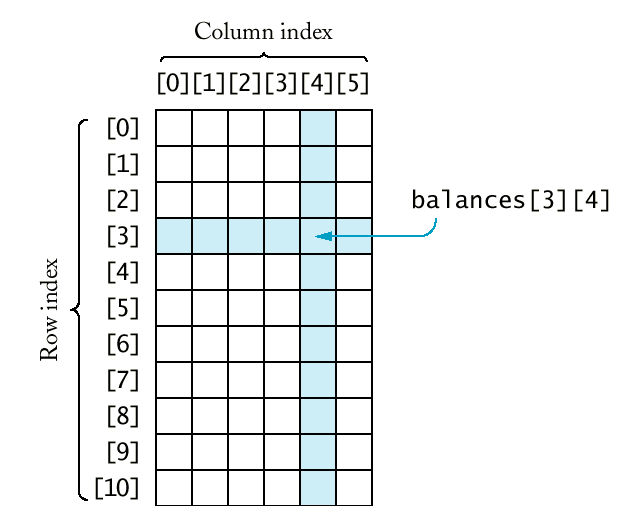

ACMA P600 Price: 995 Score 75
ALaris Nx686 Price 798 Score 57
AMAX Powerstation 600 Price: 999 Score 75
AMS Infogold P600 Price: 795 Score: 69
AST PRemmia Price: 2080 Score: 80
Austin 600 Price: 1499 Score: 95
beast value => Blackship NX-600 Price 598 Score: 60
Kompac 690 Price: 695 Score: 60


double salaries[10]; /* array */
/* compare to.... */
vector<double> salaries(10); /* vector */
const int SALARIES_CAPACITY = 100;
double salaries[SALARIES_CAPACITY];
int salaries_size = 0;
while (more && salaries_size < SALARIES_CAPACITY)
{ cout << "Enter salary or 0 to quit: ";
double x;
cin >> x;
if (cin.fail() || x == 0) more = false;
else
{ salaries[salaries_size] = x;
salaries_size++;
}
}
|
Syntax 9.3 : Array Variable Definition type_name variable_name[size];
|
double maximum(double a[], int a_size);
void raise_by_percent(double s[], double s_size, double p)
{ int i;
for (i = 0; i < s_size; i++) s[i] = s[i]*(1 + p/100);
}
double maximum(const double a[], int a_size)
void read_data(double a[], int a_capacity, int& a_size)
{ a_size = 0;
while (a_size < a_capacity)
{ double x;
cin >> x;
if (cin.fail()) return;
a[a_size] = x;
a_size++;
}
}
char input = 'y'; /* don't confuse with "y" */
char greeting[] = "Hello";
/* same as
char greeting[6] = "Hello"; */
|
greeting[0]
|
greeting[1]
|
greeting[2]
|
greeting[3]
|
greeting[4]
|
greeting[5]
|
|
'H'
|
'e'
|
'l'
|
'l'
|
'o'
|
'\0'
|
int strlen(const char s[])
{ int i = 0;
while (s[i] != '\0') i++;
return i;
}
const int MYSTRING_MAXLENGTH = 4;
char mystring[MYSTRING_MAXLENGTH + 1];
int atoi(const char s[]);
string year = "1999";
int y = atoi(year.c_str());
const int BALANCE_ROWS = 11;
const int BALANCE_COLS = 6;
double balances[BALANCE_ROWS][BALANCE_COLS];

|
Syntax 9.4 : Two-Dimensional Array Definition type_name variable_name[size1][size2];
|
void print_table(const double table[][BALANCE_COLS], int table_rows)
{ const int WIDTH = 10;
cout << fixed << setprecision(2);
for (int i = 0; i < table_rows; i++)
{ for (int j = 0; j < BALANCES_COLS; j++)
cout << setw(WIDTH) << table[i][j];
cout << "\n";
}
}